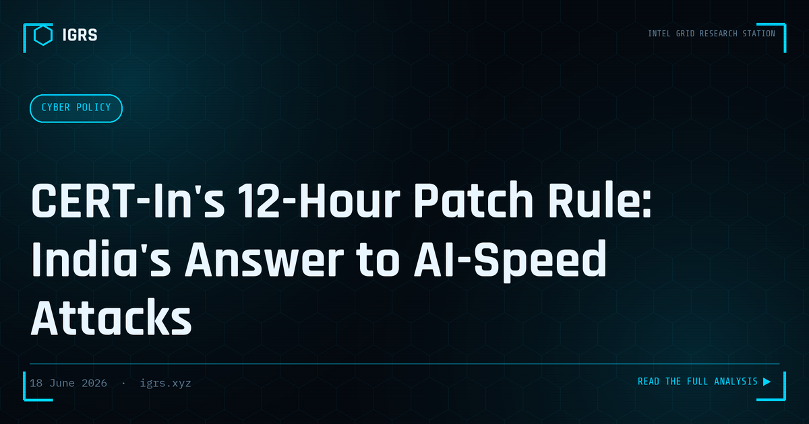

CERT-In's 12-Hour Patch Rule: India's Answer to AI-Speed Attacks
For years the working assumption in most Indian security teams was that a critical patch could wait for the next maintenance window — a weekend, the month-end change cycle, the next sprint. India's national cyber agency has now declared that assumption dangerous. In a 38-page blueprint released on 25 May 2026 (reference CISG-2026-02), the Indian Computer Emergency Response Team (CERT-In) urges organisations to remediate known-exploited, internet-facing vulnerabilities within 12 hours where feasible. The reason it gives is blunt: artificial intelligence is collapsing the time attackers need to find and weaponise a flaw, and the old patch calendar can no longer keep pace. This briefing breaks down exactly what the blueprint says, why it has arrived now, and how an Indian security team can realistically respond.
What the blueprint actually says
The document is guidance, not a penalty-bearing law — but for a national CERT it carries real weight, and it will shape audits, tenders and board expectations. Its core demand is a shift from periodic patching to continuous, risk-based vulnerability and patch management, with remediation speed tied to how exposed and how exploited a flaw is. The headline timelines are:
| Vulnerability class | Remediate within |
|---|---|
| Known exploited, internet-facing & critical systems | 12 hours (where feasible) |
| Critical, externally exposed vulnerabilities | 1 day |
| Known exploited, internal systems | 1 day (unless documented mitigations exist) |
| Critical internal vulnerabilities on high-value systems | 3 days |
| High-severity vulnerabilities | 5 days (risk-prioritised) |
Where a vendor fix is not yet available, CERT-In does not expect the impossible — it asks for documented temporary mitigations instead: isolation, access restriction, WAF or API protection, enhanced monitoring, or disabling the affected feature until a patch ships.
Why now — the AI compression of attack time
The blueprint's central argument is that the window between disclosure and exploitation is shrinking because attackers have industrialised the slow parts. CERT-In states that AI-assisted exploitation reduces the time adversaries need to identify, weaponise and exploit vulnerabilities, exposed services, weak identities and misconfigured systems. In practice that means large language models are being used for attack-surface discovery, exploit analysis, convincing phishing content, and even malware generation — compressing what used to take a skilled team days into something far faster and far more scalable. The agency's framing is that defenders should expect exploitation timelines to collapse and a growing share of attacks to run autonomously. A monthly patch cycle is simply the wrong unit of time for that threat.
This blueprint did not appear in isolation. It followed, by about a month, a CERT-In advisory (reference CIAD-2026-0020) warning about the growing offensive capability of frontier AI models from companies including Anthropic and OpenAI — flagging that their dual-use nature could lower the barrier to entry for malicious actors and help automate and scale attacks. Read together, the two documents are India's official acknowledgement that the economics of attacking have changed.
AI isn't only the weapon — it's also the target
One of the more forward-looking parts of the blueprint is its treatment of AI systems as assets that must themselves be defended. As organisations wire LLMs and agents into real workflows, CERT-In flags a distinct class of risks against those systems: prompt injection, data-leakage flaws, jailbreaking, model manipulation, training-data poisoning, model theft, and compromise of the orchestration pipeline that connects a model to tools and data. For Indian enterprises rushing AI into production, the message is that an AI feature is now part of the attack surface, governed and monitored like any other critical system — not a magic box exempt from security review.
The defensive principles, distilled
The blueprint lists a dozen principles. Stripped to what matters operationally, they cluster into a familiar but newly urgent posture:
- Assume breach. Build for rapid detection, containment and recovery rather than hoping prevention holds.
- Zero Trust and least privilege. Continuous verification, minimal standing access — the controls that limit how far a single compromise travels.
- Defence in depth. Layered controls so no single failure is catastrophic.
- Secure-by-design, including AI workflows. Security built in, not bolted on after launch.
- Supply-chain hygiene. Reduce third-party and AI-model risk through SBOMs, provenance validation and assessments.
- Continuous validation. Red teaming, penetration testing and independent audits to test controls against an evolving adversary.
- AI governance and visibility. Formal governance over AI use and real visibility into how AI systems behave in production.
Is 12-hour patching even realistic?
Honestly, not through manual effort — and CERT-In's "where feasible" wording acknowledges that. Twelve hours is unachievable if a team is still discovering its own assets during an incident. It becomes achievable only when the groundwork is already laid. The realistic path for an Indian organisation looks like this:
- Know what is exposed. Maintain a live, accurate inventory of internet-facing assets, services and APIs. You cannot patch in 12 hours what you find out about on day three.
- Subscribe to the signal. Track CERT-In advisories and the known-exploited-vulnerability feeds so the clock starts the moment a relevant flaw is flagged, not when it trends on social media.
- Automate the pipeline. Automated vulnerability scanning and patch deployment for the exposed tier, with a pre-approved emergency-change process so a critical fix does not wait for a change-advisory-board meeting.
- Have compensating controls ready. Virtual patching, WAF rules, segmentation and feature flags let you cut exposure in minutes when a vendor patch is hours or days away — and they satisfy the "documented mitigation" expectation.
- Scope it sanely. The 12-hour target applies to the exploited, internet-facing subset — not to every CVE in the estate. Prioritise by exposure and exploitation, not by raw CVSS alone.
The SOC and investigator angle
For defenders and investigators the blueprint reframes the job from "patch on schedule" to "shrink exposure continuously and prove it." Two practical shifts follow. First, instrument for speed: the metric that now matters is mean time to remediate exposed, exploited flaws, and you cannot improve what you do not measure. Second, when triaging a suspicious external touch on a service, profile the source quickly before deciding severity — the IGRS IP Lookup tool is built for exactly that hosting-versus-residential, ASN and abuse-history check. And because credential and token theft increasingly ride alongside vulnerability exploitation, confirming whether exposed accounts already sit in known breaches via the IGRS Breach Check tool belongs in the same early-triage muscle memory.
India compliance context
It is worth separating two CERT-In obligations that are easy to confuse. The new 12-hour figure concerns patching vulnerabilities and lives in a guidance blueprint. Distinct from it, the legally binding CERT-In Directions of 2022 require qualifying cyber incidents to be reported to CERT-In within six hours of detection. A mature programme treats both clocks as live at once: shrink exposure fast, and report fast when something does happen.
| Instrument | What it requires |
|---|---|
| CERT-In Blueprint CISG-2026-02 (2026) | Risk-based remediation — 12 hours for known-exploited internet-facing flaws, tiered timelines beyond that (guidance) |
| CERT-In Directions 2022 (under S.70B IT Act) | Mandatory reporting of qualifying incidents within six hours of detection; log retention obligations |
| S.70 / S.70B IT Act 2000 | CERT-In's statutory authority; protected-system and critical-infrastructure provisions |
| DPDP Act 2023 | Reasonable security safeguards for personal data and breach handling/notification obligations |
| NCIIPC (Critical Information Infrastructure) | Additional notification and protection duties for CII operators |
| Sectoral (RBI / SEBI) | Regulated entities face their own cyber-resilience and incident-disclosure timelines; listed companies disclose material incidents to exchanges within 24 hours |
Note: exact obligations depend on sector, entity type and whether systems are designated critical information infrastructure.
Bottom line
The 12-hour figure will grab the headlines, but the real instruction is a change of tempo. CERT-In is telling Indian organisations that the comfortable rhythm of monthly patching belongs to a slower era, and that an adversary armed with AI will not wait for your change window. The organisations that come out ahead will not be the ones that patch fastest in a panic — they will be the ones that already know what is exposed, can cut risk in minutes with compensating controls, and have made continuous, risk-based remediation a habit rather than a fire drill. Treat the blueprint less as a deadline to fear and more as a forcing function to finally build that capability.